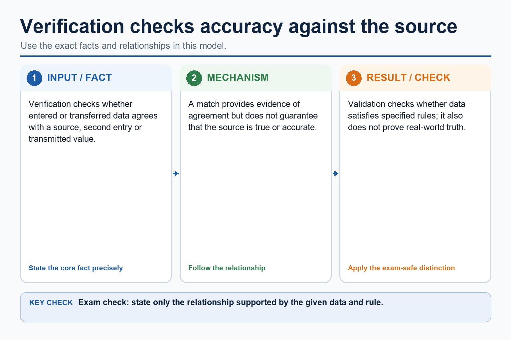
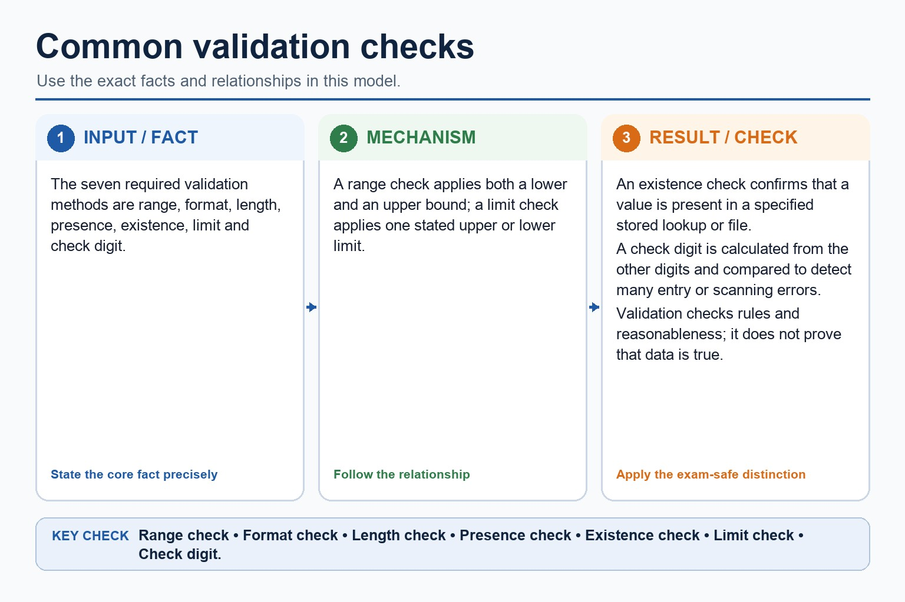

Validation checks whether data is reasonable and follows rules: range, format, length, presence, existence, limit and check digit. It cannot prove truth. A range check applies both a lower and an upper bound, such as 0 to 75. A limit check applies one stated upper or lower limit, such as file size no greater than 10 MiB or temperature at least -20 degrees Celsius.
A format check tests a required pattern; a length check tests the number of characters; a presence check rejects a blank required field; an existence check confirms a value is stored in a specified lookup file; and a check digit is calculated from the other digits and compared. Verification checks whether data was copied accurately, using visual checking or double entry.
Error detection includes parity: a parity byte checks one group and block parity adds row/column checks; a checksum is calculated from a data block and compared after transmission. These detect many errors but do not correct every error.
During transfer, a parity check can be applied to a byte or a block, while a checksum provides a separate calculated verification value.
Data validation and data verification help protect data integrity by detecting or preventing many input, copying and transfer errors before inaccurate or corrupted data are accepted. They reduce these risks but do not prove that the original source is true or replace access control and backup.
Worked example: Validate input, then verify a transferred record
A 10 MiB maximum uses an upper limit check because it has one permitted limit; a mark from 0 to 75 uses a range check because it has both lower and upper bounds. A product code uses presence, length, format, existence and check-digit rules. During entry, visual checking or double entry compares values. During transfer, byte parity detects many single-bit errors, block parity adds row/column evidence and a checksum is recalculated from the received data block.
Verification checks accuracy against the source

Verification checks accuracy against the source: source-grounded visual explanation.
Lesson fact: During data entry, visual checking compares entered data with its source and double entry compares two independently entered values.
Lesson fact: During transfer, a parity check on a byte tests the agreed odd or even parity; block parity applies parity across rows and columns of a data block.
Lesson fact: For a checksum, the sender calculates and transmits a value for the data block; the receiver recalculates and compares it.
Lesson fact: These methods detect many errors but do not prove truth or automatically correct every error.
Lesson fact: A validation check digit belongs to an identifier; a transfer checksum belongs to a transmitted data block.
Common validation checks

Common validation checks: source-grounded visual explanation.
Lesson fact: The seven required validation methods are range, format, length, presence, existence, limit and check digit.
Lesson fact: A range check applies both a lower and an upper bound; a limit check applies one stated upper or lower limit.
Lesson fact: An existence check confirms that a value is present in a specified stored lookup or file.
Lesson fact: A check digit is calculated from the other digits and compared to detect many entry or scanning errors.
Lesson fact: Validation checks rules and reasonableness; it does not prove that data is true.
Core syllabus practice
Complete validation and verification methods: apply and assess
Targeted practice
1. How do validation and verification help protect data integrity?
Show answer
They detect or prevent many input, copying and transfer errors, reducing the chance that inaccurate or corrupted data are accepted; they do not prove that the source is true.
2. Which check enforces a file size of no more than 10 MiB?
Show answer
An upper limit check.
3. How does a range check differ from a limit check?
Show answer
A range check applies both lower and upper bounds; a limit check applies one stated upper or lower limit.
4. Which check confirms a foreign code is already stored in a lookup file?
Show answer
Existence check.
5. Draw lines to match each rule to its validation check: AA1234 follows two letters then four digits; a code has exactly six characters; a required name is not blank; a barcode includes a digit calculated from the other digits.
Show answer
Format check; length check; presence check; check digit, respectively.
6. How does double-entry verification work?
Show answer
Data is entered twice and the two entries are compared.
7. Compare byte parity from block parity.
Show answer
Byte parity checks the agreed odd/even parity for one byte; block parity applies parity across rows and columns of a block and can locate many single-bit errors.
8. What happens to a checksum at the receiver?
Show answer
It is recalculated and compared with the transmitted checksum.
Exam-style question
5 marks
Describe one verification method used during data entry and two methods used during data transfer.
Show MS
Answer
Guidance
Marks
visual check against source or double entry with comparison
Do not substitute validation checks for verification, merge byte and block parity into one unexplained word, or claim that detection automatically corrects an error.
1
byte parity uses an agreed odd/even parity bit and checks it at the receiver
1
block parity checks rows and columns / can locate many single-bit errors
1
checksum is recalculated from received block and compared
1
methods detect many errors but do not prove truth or automatically correct every error
1
Lesson 069 | 45 minutes | Paper 1 Section 6 | Security, privacy and data integrity
Validation asks "is it sensible?" Verification asks "was it copied correctly?"
Data validation checks that input follows rules such as range, length, type, format or presence.
Data verification checks that data has been entered or transferred accurately compared with the source.
Neither one guarantees that the data is true. A valid fake date is still fake, just better dressed.
Distinguishvalidation from verification using precise wording
Applyrange, format, length, presence, existence, limit and check digit examples
Correct-looking data can still be wrong. This is a common source of error.
Why this matters
Marks are often lost when candidates say validation makes data correct. It only checks against a rule.
Common error
Double entry is verification, not validation. It compares two entries; it does not apply a range or format rule.
Warm-up hook
A form rejects an age of 302 because the allowed range is 0 to 120. What is happening?
The form is not being rude. It is politely saying, "Your vampire application needs evidence."
Choose one. The clue is a rule applied to input.
Knowledge point 1
Validation and verification protect data quality in different ways
ValidationChecks input data against rules before it is accepted.VerificationChecks that data has been copied, entered or transferred accurately.Input errorA mistake made while entering or transferring data.Data integrityData remains accurate, consistent and not accidentally corrupted.
Chinese support: validation = 合理性/规则检查；verification = 核对/校验录入是否一致；data integrity = 数据完整性。
Validation and verification protect data quality in different ways
Validation and verification protect data quality in different ways: source-grounded visual explanation.
Lesson fact: Validation Checks input data against rules before it is accepted.
Lesson fact: Verification Checks that data has been copied, entered or transferred accurately.
Lesson fact: Input error A mistake made while entering or transferring data.
Lesson fact: Data integrity Data remains accurate, consistent and not accidentally corrupted.
Knowledge point 2
Validation checks whether data obeys a rule
Before acceptanceInvalid input can be rejected or a warning can be shown.Rule-basedThe rule may test type, range, length, format, presence or check digit.BenefitReduces obvious errors and prevents unsuitable data entering the system.LimitValid data can still be factually wrong, such as an incorrect but possible date.
Validation checks whether data obeys a rule
Validation checks whether data obeys a rule: source-grounded visual explanation.
Lesson fact: Before acceptance Invalid input can be rejected or a warning can be shown.
Lesson fact: Rule-based The rule may test type, range, length, format, presence or check digit.
Lesson fact: Benefit Reduces obvious errors and prevents unsuitable data entering the system.
Lesson fact: Limit Valid data can still be factually wrong, such as an incorrect but possible date.
Knowledge point 3
Common validation checks
Check
What it tests
Example
Range check
Value is within allowed limits.
Exam mark must be 0 to 75.
Length check
Number of characters is correct or acceptable.
Student ID must be 8 characters.
Type check
Data uses the expected data type.
Quantity must be an integer.
Format check
Data follows a required pattern.
Postcode follows an expected letter/digit pattern.
Presence check
Required data is not left blank.
Email address field must contain something.
Check digit
Extra digit detects common transcription errors.
Barcode or account number includes a calculated digit.
Knowledge point 4
Verification checks accuracy against the source
Double entryData is entered twice and the two entries are compared.Visual checkA person compares entered data with the original document or screen.ProofreadingEntered text is checked against the source for typing errors.Transfer checkData copied or transmitted is compared with the original or expected value.
Knowledge point 5
Validation and verification are partners, not synonyms
Method
Question answered
Example
Validation
Does this data obey the rule?
Reject mark 91 when maximum mark is 75.
Verification
Was this copied or entered correctly?
Compare typed name with the paper form.
Both together
Does it follow rules, and does it match the source?
Check date format, then compare with original application form.
Validation and verification are partners, not synonyms
Validation and verification are partners, not synonyms: source-grounded visual explanation.
Lesson fact: Question answered
Lesson fact: Validation
Lesson fact: Does this data obey the rule?
Lesson fact: Reject mark 91 when maximum mark is 75.
Lesson fact: Verification
Lesson fact: Was this copied or entered correctly?
Lesson fact: Compare typed name with the paper form.
Lesson fact: Both together
Lesson fact: Does it follow rules, and does it match the source?
Lesson fact: Check date format, then compare with original application form.
Knowledge point 6
Neither method guarantees truth
Validation limitA valid value can still be wrong, such as a valid but incorrect postcode.Verification limitData can be copied accurately from a source that was already wrong.Human factorVisual checks can be skipped or performed carelessly.Security linkBetter input quality supports integrity but does not replace access control or backup.
Lesson fact: Validation limit A valid value can still be wrong, such as a valid but incorrect postcode.
Lesson fact: Verification limit Data can be copied accurately from a source that was already wrong.
Lesson fact: Human factor Visual checks can be skipped or performed carelessly.
Lesson fact: Security link Better input quality supports integrity but does not replace access control or backup.
Interactive validation rule tester
Try common validation checks
Select a check and enter practice data. The feedback explains the rule, not just "computer says no".
Interactive verification selector
Which verification method fits?
Which verification method fits?
Which verification method fits?: source-grounded visual explanation.
Lesson fact: Interactive verification selector
Lesson fact: Scenario
Worked examples
Four model answers showing what is detected
Practice with instant checking
Short answers: name the method and its limitation
Type a concise answer. Use the local answer button if you need a model response.
Mistake debugging
Fix the sentence before it loses marks
Exam-style questions
Original Cambridge-style questions with expandable MS
Answer first. Then open the mark scheme and compare wording strictly.
Summary
The difference is small in wording and large in marks
ValidationChecks input against rules before acceptance.
VerificationChecks entered/copied data against source or repeat entry.
LimitNeither proves the data is true in the real world.
Homework
Homework tasks
Task 1: Check tableCreate a table for six validation checks. For each, give one field, one rejected example and one limitation.Task 2: Verification paragraphExplain how double entry and visual checking can reduce data entry errors, and why they still do not prove truth.Task 3: 6-mark answerAnswer: "Compare validation and verification using examples from a school admissions form." Include one limitation for each.